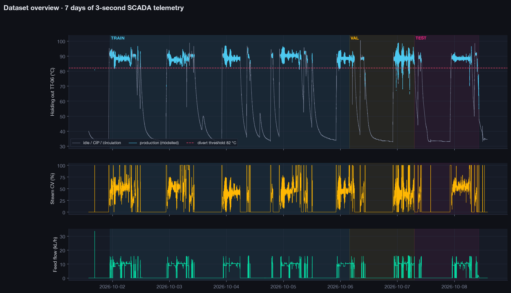
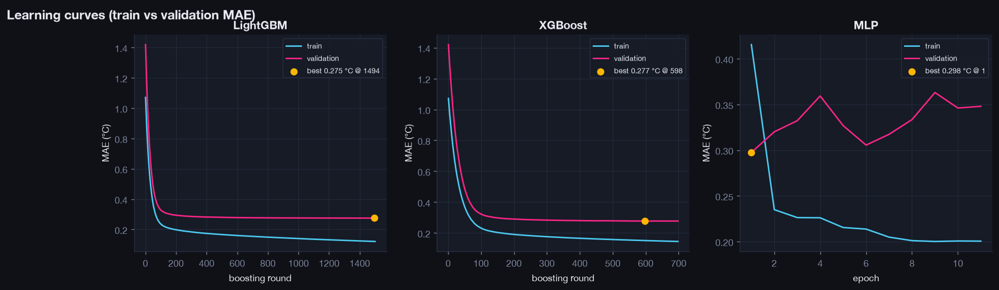
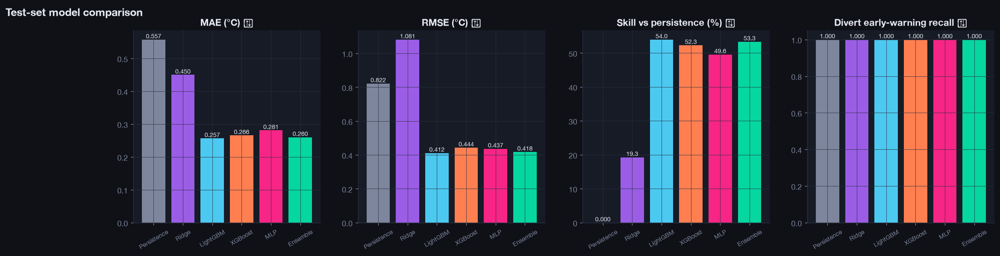
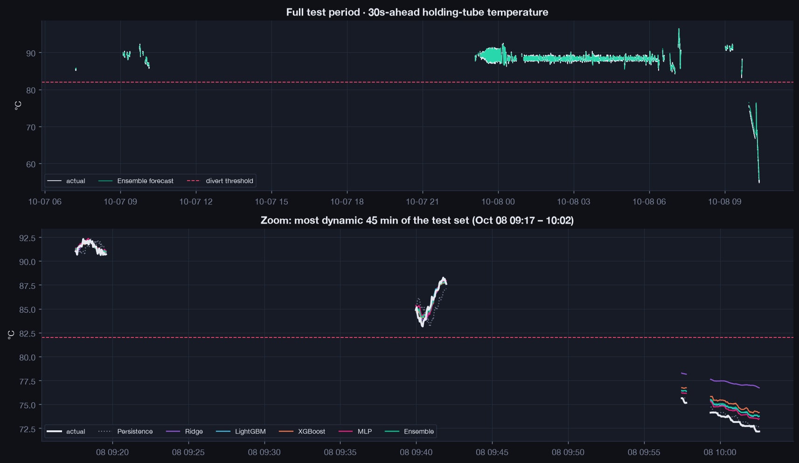
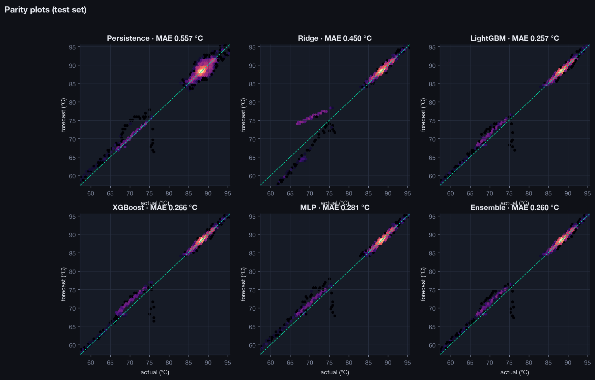
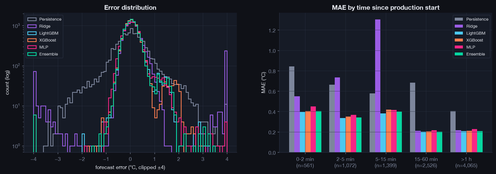
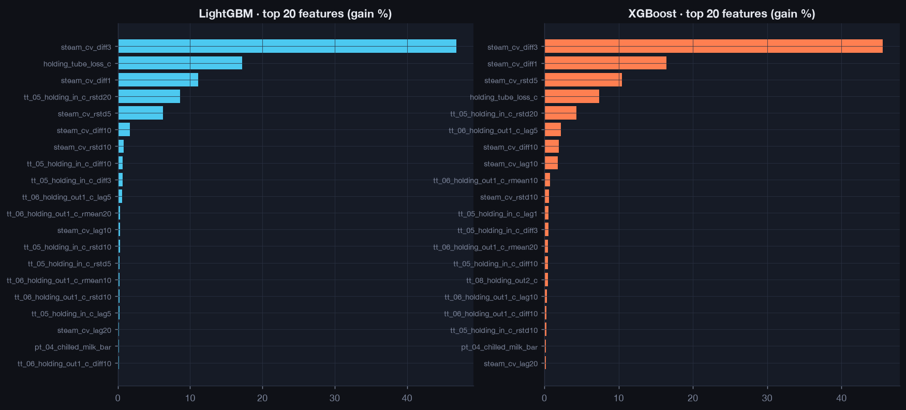

HTST Pasteurizer · Thermal Predictive Model
Run run_20261009_110229_h30s · forecasting tt_06_holding_out1_c 30 s ahead ·
generated 2026-10-09 11:03
Best model
Ensemble
Test MAE (30s ahead)
0.260 °C
Persistence MAE
0.557 °C
Skill vs persistence
+53.3 %
R² on temperature change
0.741
Training samples
44,900
Test-set accuracy
| model | MAE_C | RMSE_C | P95_AbsErr_C | MaxAbsErr_C | R2 | R2_delta | Skill_vs_Persistence_pct | Val_MAE_C | Divert_recall |
|---|---|---|---|---|---|---|---|---|---|
| Persistence | 0.557 | 0.822 | 1.830 | 10.110 | 0.965 | -0.002 | 0.000 | 1.458 | 1.000 |
| Ridge | 0.450 | 1.081 | 1.048 | 7.288 | 0.939 | -0.735 | 19.276 | 0.663 | 1.000 |
| LightGBM | 0.257 | 0.412 | 0.688 | 9.238 | 0.991 | 0.749 | 53.955 | 0.275 | 1.000 |
| XGBoost | 0.266 | 0.444 | 0.681 | 9.782 | 0.990 | 0.708 | 52.306 | 0.277 | 1.000 |
| MLP | 0.281 | 0.437 | 0.774 | 8.275 | 0.990 | 0.717 | 49.581 | 0.298 | 1.000 |
| Ensemble | 0.260 | 0.418 | 0.683 | 9.098 | 0.991 | 0.741 | 53.346 | 0.266 | 1.000 |
Divert early warning (forecast < 82.0 °C + 0.5 °C margin)
| model | events | TP | FP | FN_missed | TN | precision | recall | F1 |
|---|---|---|---|---|---|---|---|---|
| Persistence | 421.000 | 421.000 | 0.000 | 0.000 | 9,202.000 | 1.000 | 1.000 | 1.000 |
| Ridge | 421.000 | 421.000 | 0.000 | 0.000 | 9,202.000 | 1.000 | 1.000 | 1.000 |
| LightGBM | 421.000 | 421.000 | 0.000 | 0.000 | 9,202.000 | 1.000 | 1.000 | 1.000 |
| XGBoost | 421.000 | 421.000 | 0.000 | 0.000 | 9,202.000 | 1.000 | 1.000 | 1.000 |
| MLP | 421.000 | 421.000 | 0.000 | 0.000 | 9,202.000 | 1.000 | 1.000 | 1.000 |
| Ensemble | 421.000 | 421.000 | 0.000 | 0.000 | 9,202.000 | 1.000 | 1.000 | 1.000 |
MAE by time since production start (°C)
| time in run | Persistence | Ridge | LightGBM | XGBoost | MLP | Ensemble |
|---|---|---|---|---|---|---|
| 0-2 min | 0.841 | 0.550 | 0.395 | 0.405 | 0.448 | 0.404 |
| 2-5 min | 0.664 | 0.735 | 0.336 | 0.350 | 0.368 | 0.342 |
| 5-15 min | 0.578 | 1.302 | 0.382 | 0.418 | 0.417 | 0.399 |
| 15-60 min | 0.684 | 0.211 | 0.202 | 0.204 | 0.216 | 0.201 |
| >1 h | 0.404 | 0.216 | 0.207 | 0.210 | 0.228 | 0.208 |
Figures







Data
| item | value |
|---|---|
| raw rows (deduplicated) | 200,294 |
| production segments | 448 |
| supervised samples | 64,144 |
| features | 80 |
| train / val / test | 44,900 / 9,621 / 9,623 |
| period | 2026-10-01 14:00 → 2026-10-08 13:59 |